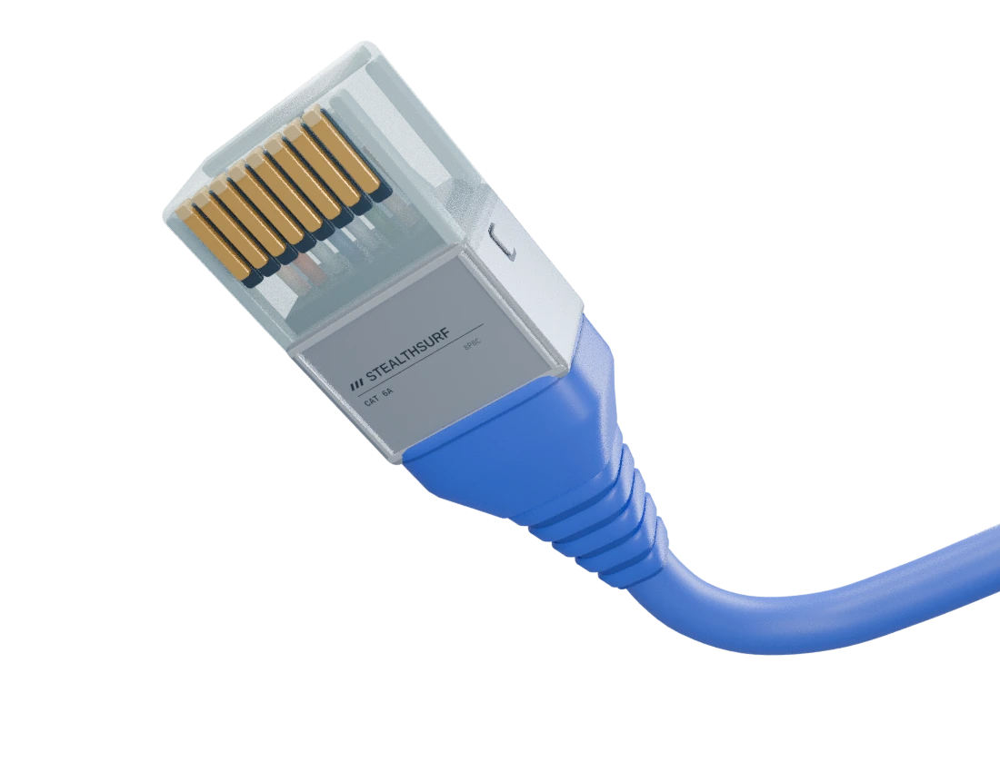
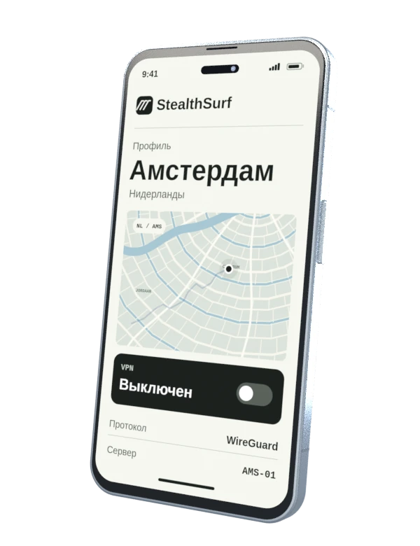
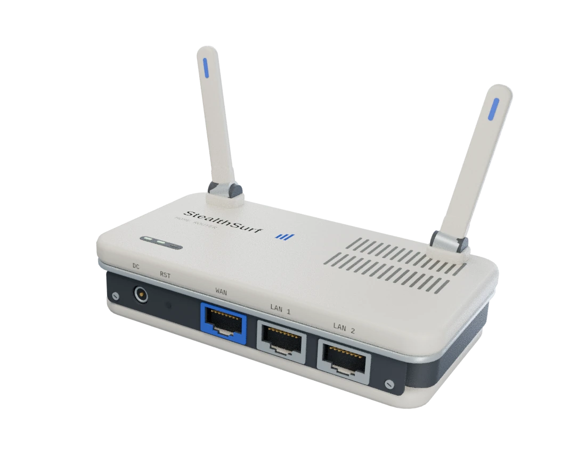

Стоечный сервер 1U
В стойке корпус занимает один юнит. Спереди — отсеки накопителей и воздухозабор, сзади — сетевые порты и питание.
- Процессор
- 8 ядер, 16 потоков
- Память
- 32 ГБ DDR5 ECC
- Накопители
- 2 × 1 ТБ NVMe
- Сеть
- 2 × 10 Гбит/с
Гид по VPN
Что происходит, когда вы включаете VPN? Проследите путь пакета от экрана телефона до серверной платы.
Разобрать подключение
Подключение
Прокрутите страницу или выберите этап, чтобы включить VPN в демо.
Профиль открыт. Пока VPN выключен, трафик идёт обычным маршрутом.


По Wi-Fi
Дома телефон отправляет пакеты по Wi-Fi на роутер. Отсюда они уходят в сеть провайдера.
Две антенны принимают и передают радиосигнал между роутером и устройствами дома.
В дата-центре
Поверните сервер, поднимите крышку и рассмотрите плату. В конце разбора увидите, как ответ возвращается домой.

В стойке корпус занимает один юнит. Спереди — отсеки накопителей и воздухозабор, сзади — сетевые порты и питание.
Характеристики показанной модели.
Планы StealthSurf
Три варианта для сравнения. Цены демонстрационные.
Для одного устройства.
69 ₽ / год
Для телефона и компьютера.
199 ₽ / год
Для отдельного сервера.
1 790 ₽ / год
Справка
Виджет показывает, как выглядит подключение. Настройки вашего устройства остаются прежними.
Адрес сервера, протокол и параметры доступа. В рабочем приложении профиль можно импортировать файлом или ссылкой.
Это локация сервера в примере. Телефон может находиться в другом городе.
Измерения здесь нет. По сцене можно проследить маршрут пакета, а скорость реального соединения покажет тест в VPN-клиенте.
Это портфолио-проект. Тарифы можно сравнить, а оплата и выдача конфигураций здесь недоступны.
Все сцены и примеры открываются без регистрации.